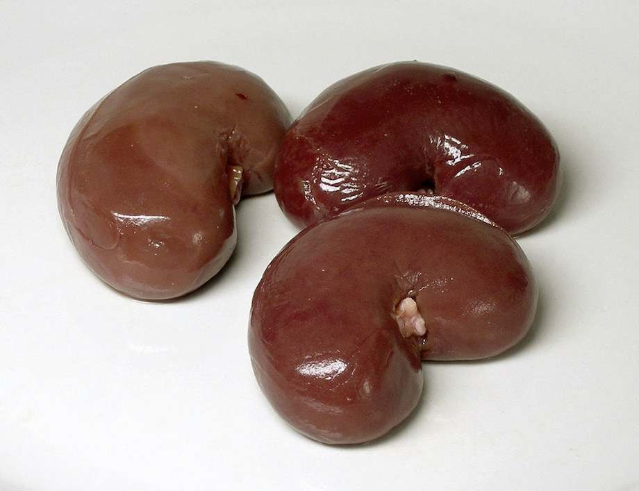

The nervous system and the hormone system work together to maintain a stable internal environment in your body. This is called homeostasis.
Homeostasis is important for the functioning of cells and organs.
Homeostasis is maintained by control systems in the body. A control system has these features:
A control system
The internal conditions that are controlled include:
water content
concentration of ions
temperature – enzymes work best at a particular temperature
blood sugar levels – sugar is needed to supply cells with energy
Negative feedback (OCR, Edexcel)
In a control system, any change causes a response that reverses the change. This is called negative feedback. For example, a central heating system detects the temperature in a house. When the temperature drops below a set value, the control centre switches on the boiler. The house temperature rises until it reaches the set value, and the control centre switches the boiler off.
A negative feedback loop
Similarly, the body uses negative feedback systems to control its internal environment.
Controlling water and ions
Your body takes in water and mineral ions (such as salt) when you eat and drink. Respiration in cells also produces water. Water is lost from your body when you sweat, breathe out, urinate and excrete. Mineral ions are also lost in sweat and urine.
The kidneys do two jobs:
removes waste from the body
controls the balance of water and ions in the body (osmoregulation).
The kidneys remove excess water and salts from the blood as it passes through them. But if the brain detects that the concentration of ions in the blood plasma is high, the kidneys reabsorb reabsorb some of the water back into the blood and produce a smaller volume of dark, concentrated urine.
If the concentration of ions in the blood plasma is low, water is not reabsorbed and a larger amount of pale, dilute urine is produced.

Lamb kidneys
The amount of water and ions in the blood is affected by temperature, how much you drink and what you eat. On a hot day, or after vigorous exercise, you lose water through sweating faster than you take it in – especially if you don’t drink enough. The kidneys respond by reabsorbing more water and producing less urine.
On cold days you lose less water by sweating, so the concentration of ions in your blood is lower. The kidneys reabsorb less water and produce more urine.
ADH and water balance (OCR)
Water balance in the body is controlled by a negative feedback system. Changes in water and ion concentration of the blood plasma are detected by receptors in the brain.
If the concentration of ions becomes too high, the pituitary gland releases the hormone ADH into the bloodstream. ADH stimulates the kidneys to reabsorb water. A smaller amount of dark concentrated urine is produced, and the concentration of ions in the blood is reduced.
If the ion concentration in the blood is too low, less ADH is produced, less water is reabsorbed and a larger volume of dilute urine is produced.
Osmoregulation is a negative feedback mechanism
Drugs and water balance (OCR)
Some drugs affect the amount of urine produced because they have an effect on ADH production.
Alcohol suppresses ADH production, and so results in a larger volume of dilute urine. Drinking too much alcohol can cause dehydration. This may cause headaches and dizziness.
The drug Ecstasy increases ADH production; the amount of water reabsorbed into the bloodstream increases and less urine is produced. This dilutes the ion concentration of the blood too much. It can sometimes cause brain damage, or even death.